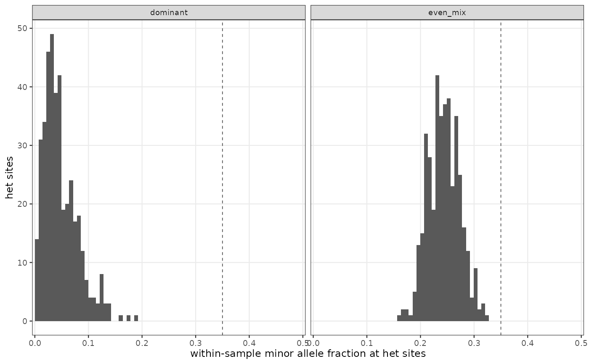

One small histogram per sample of the within-sample minor allele fraction at
heterozygous sites, which is where the strain proportions show. Reads the per-site table
from plasgenomicsutils wsaf_profile --sites-out.
Arguments
- sites
Per-site table from
wsaf_profile --sites-out(path or data frame):sample,minor_frac, and optionallywsmaf.- profile
Optional per-sample summary from
wsaf_profile(path or data frame). When given, panels are ordered and coloured by itsclass, and the panel strip carries the class – which is the quickest way to read a cohort.- samples
Optional subset of samples, in the order given.
- value
Which fraction to draw:
"minor_frac"(default, per-sample minor,[0, 0.5]) or"wsmaf"(the population-level minor allele's within-sample frequency,[0, 1], as used by the COI literature).- comparable_at
Where to draw the comparable-clone line (default
0.35, matchingwsaf_profile).- bins
Histogram bins (default
50).- scales
Panel y axes:
"free_y"(default) gives each sample its own, which shows the shape of every distribution however few calls it has;"fixed"puts them on one axis, so panel heights compare and a sample with a handful of heterozygous sites reads as nearly empty next to one with thousands. Worth switching when the question is how much of the genome is heterozygous rather than where the minor mass sits – the two are separate things, andwsaf_profilereports the first ashet_rate.- ncol
Panel columns (default chosen from the sample count).
- colours, colors
Named colours per class.
Reading it
At a heterozygous site the read fractions follow the strain
proportions, so for K strains the sites fall into bands (Zhu et al. 2019). In the
minor half of that picture:
mass squeezed against zero – one dominant strain, with a minor companion or just sequencing noise. Filtering minor alleles leaves the dominant haplotype intact, so such a sample can be treated as monoclonal.
a band near 0.5 – two strains of comparable size. No minor-allele filter can remove it, because a filter has to stay below 0.5 to keep the dominant call at all; forcing it would delete a real strain and leave a chimera.
more than one band – more than two strains.
The dashed line marks comparable_at: a minor-allele filter has to stay below 0.5 to
keep the dominant call, so mass past that line is what no filter can remove.
Judge the panels by how much area sits past the line, not by whether anything does.
A handful of sites near 0.5 in an otherwise empty panel is a few repetitive or
mismapped loci; a second strain shows up across the genome. That is why wsaf_profile
decides on rates over covered sites, and reports min_freq_needed – the filter that
clears a given sample – rather than a verdict alone.
References
Zhu, S. J. et al. (2019) The origins and relatedness structure of mixed infections vary with local prevalence of P. falciparum malaria. eLife 8, e40845. doi:10.7554/eLife.40845
Paschalidis, A. et al. (2023) coiaf: directly estimating complexity of infection with allele frequencies. PLOS Computational Biology 19, e1010247. doi:10.1371/journal.pcbi.1010247
See also
plasgenomicsutilsR-package, and plasgenomicsutils wsaf_profile.
Examples
# a dominant clone with a 5% companion, and an even two-strain mixture
set.seed(1)
sites <- rbind(
data.frame(sample = "dominant", minor_frac = stats::rbeta(400, 2, 40)),
data.frame(sample = "even_mix", minor_frac = stats::rbeta(400, 40, 42) / 2))
plot_wsaf(sites)
# one y axis across panels, to compare how many het calls each sample has
plot_wsaf(sites, scales = "fixed")
